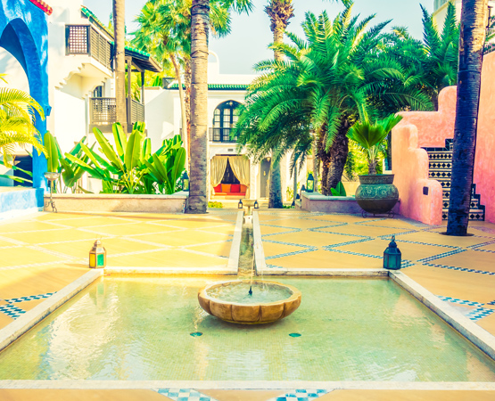

Dedicação total ao resgate e proteção animal. Trabalhamos diariamente para reabilitar cães e gatos em situação de vulnerabilidade, garantindo cuidados médicos e preparando cada um deles para encontrar uma família amorosa e responsável.
Seja um Voluntário
Comprometidos com o bem-estar animal e a proteção de pets resgatados.
Doações de ração de alta qualidade para garantir a nutrição adequada de todos os animais abrigados.
Áreas de recreação seguras e socialização diária para manter os pets ativos e felizes.
Sessões regulares de banho e cuidados estéticos para manter a saúde da pelagem em dia.
Equipe especializada em buscar animais em situação de vulnerabilidade e risco nas ruas.
Atendimento clínico completo, vacinação em dia e castração obrigatória para todos os adotados.
Um espaço acolhedor e seguro onde os animais aguardam com conforto pela nova família.
Veja o que dizem as famílias que transformaram a vida de um pet adotado.